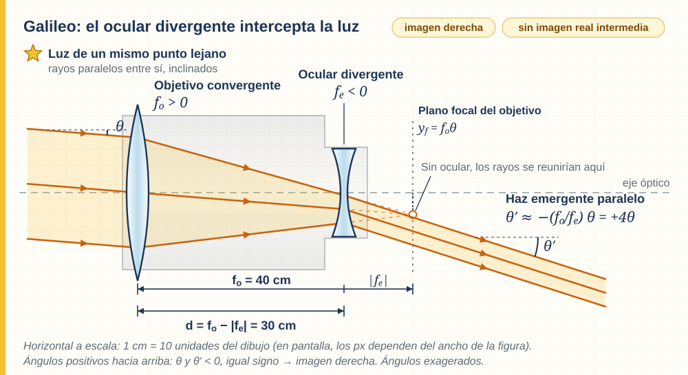
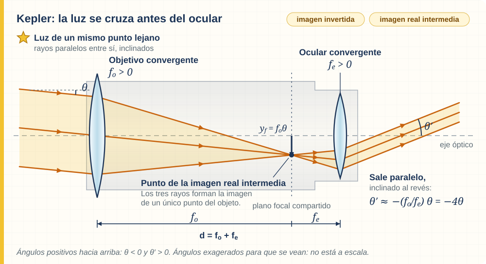
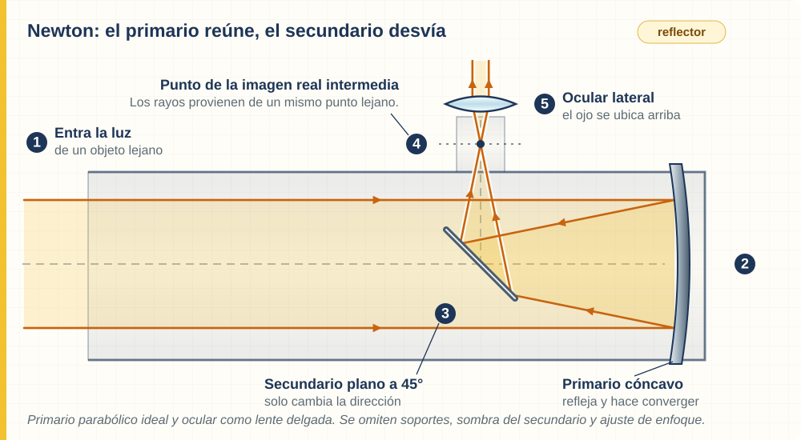

Sistemas Multi Física · Clase 19 · Óptica
Telescopios: mirar lejos, pensar distinto
Del instrumento que perfeccionó Galileo a los espejos de Newton. Seguimos la luz para comprender qué vemos y qué podemos concluir.
1 ¿El telescopio acerca la Luna?
La Luna sigue a la misma distancia cuando la miramos por un telescopio. Lo que cambia es la luz que llega a nuestros ojos y el ángulo bajo el cual vemos sus detalles. Un cráter puede ocupar una parte mayor de nuestro campo de visión y resultar más fácil de distinguir.
Un telescopio óptico recoge luz y organiza su recorrido para observar objetos lejanos. En observación visual, el objetivo recibe la luz del objeto y el ocular se coloca cerca del ojo. El ojo recibe la luz emergente y la enfoca sobre la retina. En un telescopio con cámara, un detector puede registrar la imagen sin un ocular visual.
2 Dos tipos de lentes, dos efectos
Retomamos el modelo de la clase 18: lentes delgadas de vidrio o plástico en aire, con índice de refracción mayor que el del aire y rayos cercanos al eje. La luz se desvía por refracción al entrar y salir; en el dibujo simplificamos esas desviaciones en un único plano.
Convergentes
Son más gruesas en el centro. Pueden ser biconvexas o plano-convexas. Un haz paralelo al eje se reúne en un foco real al salir. Usamos \(f>0\).
Divergentes
Son más delgadas en el centro. Pueden ser bicóncavas o plano-cóncavas. Un haz paralelo al eje sale separado, como si procediera de un foco virtual anterior a la lente. Usamos \(f<0\).
“Plano-convexa” significa que una cara es plana y la otra convexa. Hay otras formas, como los meniscos: para clasificarlas no alcanza con mirar una sola cara. Lo decisivo es su efecto sobre el haz.
Una lente divergente no es inútil para aumentar: combinada con un objetivo convergente puede integrar un telescopio que aumente el tamaño angular. El efecto del sistema depende de ambas lentes y de su separación.
3 Foco, distancia focal y plano focal
El eje óptico es la recta de referencia que une los centros de las lentes alineadas. El foco es un punto del eje; la distancia focal caracteriza su separación respecto de la lente. En las ecuaciones, \(f\) lleva signo: positivo para una convergente y negativo para una divergente. La separación física es \(|f|\).
El plano focal es un plano perpendicular al eje que pasa por el foco. No es una pieza de vidrio: es una ubicación geométrica. Para un objeto muy lejano, cada punto envía hacia el objetivo un haz aproximadamente paralelo. Un punto sobre el eje enfoca en el foco; un punto fuera del eje enfoca en otro lugar del plano focal. El conjunto de esos puntos forma la imagen.
Por eso dibujaremos haces inclinados: una estrella situada a un costado no envía un haz paralelo al eje, aunque sus rayos sean aproximadamente paralelos entre sí. Las distintas inclinaciones representan distintas posiciones del cielo.
Conexión con la clase anterior:
\(d_o\) es la distancia del objeto y \(d_i\), la de su imagen, con la convención de signos de lentes delgadas: objeto real delante de la lente, \(d_o>0\); imagen real detrás, \(d_i>0\); imagen virtual delante, \(d_i<0\). Todas las distancias deben usar la misma unidad. Para un objeto muy lejano, \(1/d_o\) es casi cero: el objetivo convergente forma su imagen cerca de \(d_i=f\). Aquí usamos la ecuación para interpretar una posición, sin hacer despejes.
4 Potencia de una lente
La potencia óptica indica cuán intensamente una lente modifica la convergencia de un haz. Una convergente de menor distancia focal reúne los rayos a menor distancia; una divergente de menor \(|f|\) separa más un haz inicialmente paralelo.
Para expresar \(P\) en dioptrías, se escribe \(f\) en metros. Una dioptría equivale a \(1\,\mathrm{m}^{-1}\). El signo de la potencia es el de \(f\).
Problema: interpretar la potencia de una lente convergente de 50 cm de distancia focal.
Datos: \(f=+50\,\mathrm{cm}=+0{,}50\,\mathrm{m}\).
Fórmula y reemplazo: \(P=1/f=1/(+0{,}50\,\mathrm{m})=+2\,\mathrm{m}^{-1}\).
Resultado e interpretación: potencia de +2 dioptrías. El signo indica convergencia. Una lente divergente de \(f=-0{,}50\,\mathrm{m}\) tiene −2 dioptrías: igual valor absoluto de potencia y efecto opuesto sobre un haz paralelo.
No confundas tres ideas: potencia de lente se mide en dioptrías; potencia energética, en watts; aumento de telescopio, en “veces”, sin unidad. Una lente de +2 dioptrías no significa, por ese dato solo, un telescopio de 2 aumentos.
| Magnitud | Símbolo | Unidad o significado |
|---|---|---|
| Distancia focal | \(f\), \(f_o\), \(f_e\) | Metro; subíndices o: objetivo, e: ocular. |
| Potencia de lente | \(P\) | Dioptría = m⁻¹. |
| Separación entre lentes | \(d\) | Metro; distancia física positiva. |
| Aumento angular | \(M\) | Sin unidad; relación entre ángulos. |
| Abertura del objetivo | \(D\) | Metro; diámetro útil de entrada de luz. |
5 Galileo: perfeccionar para descubrir
Galileo Galilei no inventó el primer telescopio. En 1609 construyó y mejoró instrumentos a partir de noticias sobre anteojos de larga vista fabricados en los Países Bajos. Su contribución incluyó mejorar su desempeño y usarlos para investigar el cielo de manera sistemática.
El telescopio galileano combina un objetivo convergente, de focal larga, con un ocular divergente, de focal corta en valor absoluto. En el ajuste para un objeto muy lejano, el ocular se ubica antes del lugar donde el objetivo por sí solo reuniría los rayos. Por eso no se llega a formar una imagen real intermedia dentro del tubo.

En celular podés desplazar horizontalmente los planos para leer sus etiquetas.
La imagen observada es derecha. Su campo visual es estrecho: se ve una región pequeña de la escena. Tiene utilidad terrestre y explica el funcionamiento básico de algunos binoculares de teatro. La imagen derecha no significa que podamos proyectarla directamente en una pantalla detrás del ocular.
6 Kepler: una imagen dentro del tubo
En 1611, Johannes Kepler describió un diseño con dos lentes convergentes. El objetivo forma primero una imagen real e invertida. El ocular se sitúa después de esa imagen y permite observarla con mayor tamaño angular.
En el ajuste ideal para el ojo relajado, el plano focal de salida del objetivo coincide con el plano focal de entrada del ocular. La imagen intermedia queda en ese plano focal compartido. Si retiráramos el ocular, podríamos registrar la imagen allí con una pantalla o sensor.

La inversión suele ser aceptable para estudiar el cielo: no impide reconocer relaciones entre estrellas. Este diseño permite un campo visual mayor que el galileano simple. En instrumentos terrestres se agregan sistemas de lentes o prismas para enderezar la imagen.
7 Aumentar es cambiar un ángulo
El aumento angular compara el ángulo aparente con telescopio con el ángulo a simple vista. Ver un objeto con 20 aumentos significa que su tamaño angular es aproximadamente veinte veces mayor; el objeto no cambia de tamaño ni se desplaza hacia nosotros.
Estas relaciones corresponden a los dos telescopios ideales de lentes delgadas anteriores, en ajuste afocal y ángulos pequeños. \(f_o\) y \(f_e\) son focales con signo y se expresan en la misma unidad; \(d\) es la separación entre los planos de las lentes.
- Galileo: \(f_e<0\), entonces \(M>0\): imagen derecha. La separación es \(d=f_o-|f_e|\).
- Kepler: \(f_e>0\), entonces \(M<0\): imagen invertida. La separación es la suma de las dos focales positivas.
- El valor \(|M|\) expresa cuántas veces aumenta. Un signo negativo no significa que el telescopio achique.
Problema: interpretar un telescopio galileano ideal.
Datos: \(f_o=+1{,}00\,\mathrm{m}\) y \(f_e=-0{,}050\,\mathrm{m}\) (−5 cm). Son valores didácticos, no medidas de un instrumento histórico particular.
Fórmula y reemplazo: \(M=-1{,}00/(-0{,}050)=+20\); \(d=1{,}00-0{,}050=0{,}95\,\mathrm{m}\).
Resultado: 20 aumentos, imagen derecha y 95 cm entre lentes.
Interpretación: si se reemplaza el ocular por uno convergente de +5 cm y se ajusta la separación a 105 cm, el sistema kepleriano tiene \(M=-20\): igual tamaño angular en valor absoluto, con inversión.
Con el mismo objetivo, un ocular de menor \(|f_e|\) produce más aumento. Para enfocar se ajusta la posición del ocular respecto de la imagen del objetivo; las distancias ideales anteriores cambian para objetos cercanos y los instrumentos reales pueden usar grupos de lentes.
8 Newton: doblar el camino con espejos
Un refractor utiliza lentes en el objetivo. Un reflector recoge y concentra la luz con un espejo primario cóncavo. Newton construyó un telescopio reflector en 1668. La reflexión permite evitar la separación de colores que produce un objetivo de lente simple, aunque un reflector también puede presentar otros defectos de imagen.
En un newtoniano, la luz entra por la boca del tubo y llega al espejo primario del fondo. El primario la devuelve convergente. Antes de llegar al foco, un espejo secundario plano, inclinado 45°, desvía el haz hacia un ocular lateral. El secundario cambia la dirección; no concentra por sí mismo la luz.

Catadióptricos: combinar recursos
Los telescopios catadióptricos combinan espejos con lentes o placas correctoras. Ejemplos son Schmidt-Cassegrain y Maksutov-Cassegrain. Sus reflexiones pliegan el recorrido y las superficies correctoras ayudan a reducir defectos ópticos: pueden ofrecer una focal efectiva larga dentro de un tubo compacto. No alcanza con ver que hay un ocular de vidrio para llamarlo catadióptrico: la combinación corresponde al sistema que forma y corrige la imagen.
imagen derecha
imagen invertida
ocular lateral
| Diseño | Cómo recoge y dirige la luz | Rasgo para reconocer |
|---|---|---|
| Galileano · refractor | Objetivo convergente y ocular divergente. | Imagen derecha; sin imagen real intermedia en ajuste afocal. |
| Kepleriano · refractor | Objetivo y ocular convergentes. | Imagen real intermedia; visión invertida sin enderezadores. |
| Newtoniano · reflector | Primario cóncavo y secundario plano. | Ocular lateral; recorrido reflejado. |
| Catadióptrico | Espejos y elementos refractores correctores. | Combina reflexión y refracción para formar y corregir la imagen. |
9 Más aumento no garantiza más detalle
La abertura es el diámetro útil del objetivo. Una abertura mayor capta más luz y, en condiciones comparables, permite resolver detalles angulares más pequeños. En una abertura circular sin obstrucción, el área de entrada es \(A=\pi(D/2)^2\): duplicar el diámetro ofrece cuatro veces el área colectora, no cuatro veces el aumento.
Un ocular puede agrandar una mancha borrosa sin revelar nada nuevo, como ampliar una foto que ya no tiene detalle. La analogía ayuda a distinguir tamaño y resolución, aunque en el telescopio también intervienen la difracción, la atmósfera, el enfoque y la calidad óptica.
Una lente simple desvía cada color de manera algo diferente: es la aberración cromática, visible como bordes coloreados o focos distintos. Los objetivos con varias lentes pueden reducirla. La turbulencia del aire puede hacer temblar las imágenes incluso con un buen instrumento. Por eso no evaluamos un telescopio solo por sus “aumentos”.
10 ¿Qué descubrió y cómo lo supo?
La epistemología pregunta cómo construimos y justificamos el conocimiento. Aquí aparece un problema concreto: si vemos algo nuevo mediante un instrumento, ¿cómo sabemos que pertenece al cielo y no es un defecto del vidrio?
Probar el telescopio con objetos terrestres conocidos, repetir observaciones, registrar posiciones y comparar resultados con otros observadores permite evaluar su confiabilidad. No elimina todo error de una vez, pero ofrece controles y razones públicas para aceptar o revisar una explicación.
| Observación | Interpretación y alcance |
|---|---|
| Relieves y sombras cambiantes en la Luna. | Las sombras permiten inferir montañas y valles; cuestionan una Luna perfectamente lisa. |
| Cuatro puntos luminosos cambian de posición junto a Júpiter de una noche a otra. | El patrón repetido permite interpretarlos como satélites: hay cuerpos que orbitan un centro diferente de la Tierra. |
| Venus presenta una amplia secuencia de fases y cambios de tamaño aparente. | Es incompatible con la disposición ptolemaica tradicional y coherente con Venus orbitando el Sol. Por sí sola no demuestra el movimiento terrestre. |
El último límite es importante: en el modelo de Tycho Brahe, los planetas orbitaban el Sol y este orbitaba una Tierra inmóvil. Ese modelo también admitía las fases de Venus. El modelo de Copérnico situaba a la Tierra entre los planetas que orbitan el Sol. Para decidir entre explicaciones compatibles con una observación hacen falta otras evidencias y argumentos.
El telescopio amplió lo observable y abrió nuevas preguntas. La física de lentes y espejos explica cómo obtiene imágenes; la reflexión epistemológica ayuda a evaluar qué afirmaciones sostienen esas imágenes.
11 Del plano al instrumento
Trabajo en parejas, sin montaje óptico: usen una hoja, regla y dos tarjetas que representen objetivo y ocular. Dibujen un eje, una lente convergente y tres rayos que llegan paralelos desde un mismo punto lejano. Marquen dónde se reunirían.
- Coloquen la tarjeta de ocular divergente antes de esa reunión: expliquen qué diseño representa.
- Cámbienla por una convergente y ubíquenla después de la imagen intermedia: expliquen qué cambia en el recorrido.
- Agreguen flechas de propagación y un plano focal. Identifiquen qué es luz, qué es una referencia geométrica y qué partes físicas faltan en el plano.
Estos son planos ópticos: muestran componentes y trayectorias, no medidas de fabricación. Un instrumento real necesita tubo, monturas, alineación y ajuste de enfoque. No reproduzcan a escala las curvas de las lentes a partir de los dibujos.
12 Actividades a partir de la lectura
Respondé con tus palabras usando el texto, las tablas y las figuras. En cada respuesta mencioná la sección o figura que usaste. No necesitás buscar información externa. Las cuentas sencillas sirven para interpretar; lo central es justificar.
| Equipo | \(f_o\) | \(f_e\) | \(M\) | Separación \(d\) |
|---|---|---|---|---|
| A | +1,00 | −0,050 | +20 | 0,95 m |
| B | +1,00 | +0,050 | −20 | 1,05 m |
| C | +1,00 | +0,025 | −40 | 1,025 m |
- Recibir y observar. ¿Qué funciones cumplen el objetivo, el ocular y el ojo? Explicá por qué el telescopio no acerca físicamente la Luna.
- Dos lentes. Describí cómo salen rayos paralelos al eje de una lente convergente y de una divergente. Incluí el signo de la distancia focal y explicá qué significa foco virtual.
- Un punto y un plano. Diferenciá foco de plano focal. ¿Dónde enfoca el objetivo un haz paralelo inclinado respecto del eje? Justificá con la figura 2.
- Seguir la luz. Compará las figuras 1 y 2: ¿en cuál se cruzan los rayos antes del ocular? ¿Dónde se coloca el ocular divergente? Copiá un recorrido de cada figura con flechas. Explicá por qué la línea vertical discontinua de la figura 2 no es luz viajando hacia atrás.
- Potencia sin confusiones. Una lente tiene \(f=+0{,}25\,\mathrm{m}\). Usá \(P=1/f\) para hallar su potencia y comparala con la lente de +0,50 m del ejemplo. ¿Cuál reúne antes un haz paralelo? ¿Ese resultado permite conocer, por sí solo, el aumento de un telescopio?
- Leer la tabla. Identificá cuáles equipos son galileanos y cuáles keplerianos. ¿Cuáles tienen igual aumento en valor absoluto y distinta orientación? Explicá los signos de \(f_e\) y \(M\).
- Cambiar el ocular. Compará B y C: ¿qué se mantiene y qué cambia? Relacioná la focal del ocular con el aumento. ¿Por qué C no garantiza el doble de detalles que B?
- El camino de Newton. Enumerá las etapas de la figura 3. ¿Qué espejo concentra la luz y cuál la desvía? Explicá qué distingue a un reflector de un refractor y a un catadióptrico de ambos diseños simples.
- Ver e interpretar. Elegí una observación de la sección 10. Separá qué se registra de qué se infiere. Explicá por qué las fases de Venus no bastan para demostrar que la Tierra se mueve y nombrá el modelo alternativo que también las admite.
- Un instrumento confiable. Un compañero afirma: “Si lo vi por el telescopio, mi explicación es verdadera”. Respondé usando dos controles de confiabilidad y la diferencia entre observación y modelo. Cerrá con una recomendación de seguridad para usar instrumentos ópticos.
13 Preguntas para pensar y puesta en común
- ¿Por qué una imagen invertida puede servir para astronomía, pero resultar incómoda para mirar un paisaje?
- Si dos modelos explican la misma observación, ¿qué trabajo queda por hacer?
- ¿Qué error hay en elegir un telescopio únicamente por el número de aumentos anunciado?
14 Fuentes para ampliar
El contenido necesario para resolver las actividades está en esta clase. Las fuentes siguientes permiten contrastar las explicaciones y el contexto histórico.